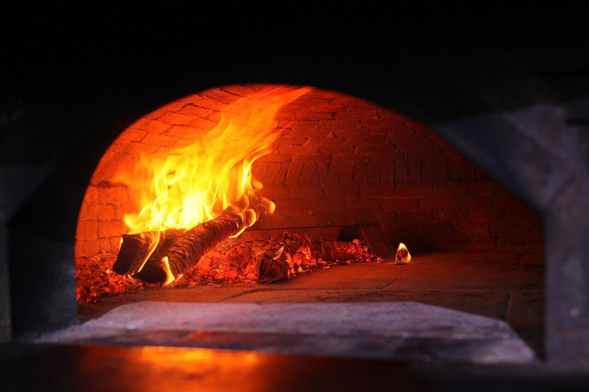
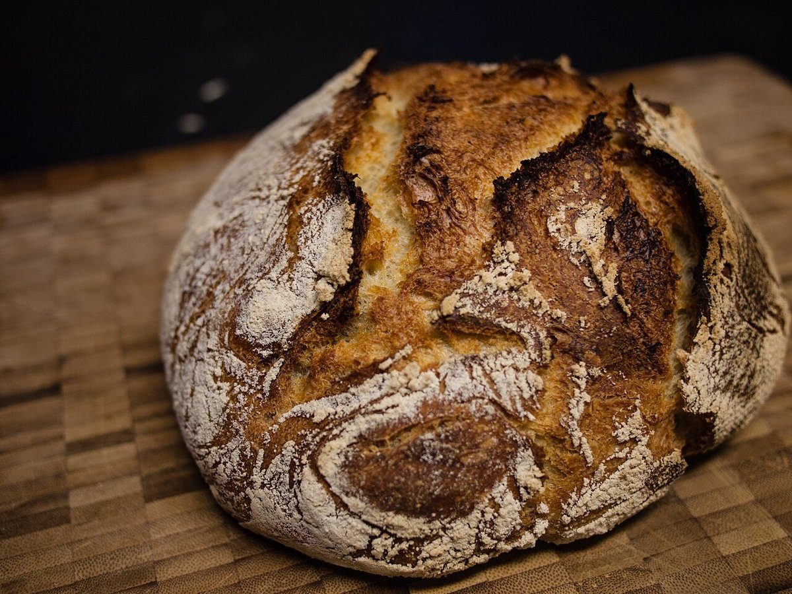

制作側の連想
焼結炉の部位を、配置図にしてみる
このサイトは、粉を固めた成形体を高温で焼き固める「焼結炉」を図にしたつもりで作りました。上の断面図に1〜6の番号をふり、下の凡例と並べています。制作側の連想で、お店の理念・由来とは無関係です。実際の装置の仕様や、お店の設備を示すものでもありません。
凡例
六つの部位
- 1炉体(外殻と断熱材)熱を外へ逃がしにくくするために、内側を囲む外殻と断熱の層。
- 2発熱体炉心管のまわりに配置する、電気で熱を出す線。
- 3炉心管試料を入れて、ガスの通り道にもなる筒。
- 4試料台(セッター)粉を固めた成形体を載せる、耐熱性の台。
- 5熱電対温度を読み取るために、先端を試料の近くへ置く細い線。
- 6ガス口(導入と排気)筒の両端にある、ガスの出入り口。
ギャラリー(イメージ)
パンとコーヒー豆の写真




写真はパンとコーヒー豆のイメージです。お店のものではなく、お店で提供している商品を示すものでもありません。
ご案内
お店のこと(確認できたものだけ)
| 屋号 | パンドゥキュイソン |
|---|---|
| 所在地 | 〒639-1132 奈良県大和郡山市高田町1-1 |
| 電話 | 準備中 |
| 営業時間 | 準備中 |
| 定休日 | 準備中 |
| ご予約 | 準備中 |
| 駐車場 | 準備中 |
| SNS | Instagram @paindecuisson |